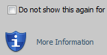
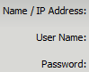
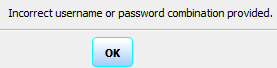

#Run ME7000 Java Client GUI # First check if the GUI is running. If not, run the GUI login using encGuiLogin, encGuiPassword #inputs: encIP=[] encGuiLogin encGuiPassword encGuiTimeout clientOutputDir clientFile #Usage: launch_java_client ############################################################### #common code for every sikuli code. Do not remove this section from me7klib import * ############################################################### #YOUR code start here ############################################################### #This is your check for the inputs that you are expecting. def Check_args(): #os.environ.get('kleverCurrentDir') Check_arg('encIp') if not os.getenv('encGuiLogin'): Set_arg('encGuiLogin', 'Admin') Print_debug('Encoder Gui Login is not given. Will use default Login: Admin') if not Get_arg('encGuiPassword'): Print_debug('Encoder Gui Password is not given. Will use default password: <blank>') Set_arg('encGuiPassword', '') if not Get_arg('encGuiTimeout'): Set_arg('encGuiTimeout', '120') Print_debug('Encoder Gui Timeout is not given. Will use default value: 120 seconds') if not Get_arg('clientOutputDir'): Print_debug('Current output dir is not defined. Will use default: ' + Get_arg('TEMP')) Set_arg('clientOutputDir', str(Get_arg('TEMP'))) if not Get_arg('clientFile'): Print_debug('Current client file is not defined. Will use default: cp.jnlp') Set_arg('clientFile', 'cp.jnlp') Check_args() ############################################################ #Main program definitions code start from this point #Any global variables here javaME7000MainTitle = 'ME-7000 - ' + str(Get_arg('encIp')) + ' - ' + str(Get_arg('encGuiLogin')) javaClientFile = Get_arg('encIp') + '_' + Get_arg('clientFile') javaClientFilePath = Get_arg('clientOutputDir') + '\\' + javaClientFile #Any definitions are here def Check_client(): mycmd = 'auto_windows_manager.exe windows_title=\"' + javaME7000MainTitle + '\" windows_action=2' find_JavaMainTitle = Run_cmd(mycmd) if int(find_JavaMainTitle) == 0: Print_debug(javaME7000MainTitle + ' is already running. Use current session.') exit(0) else: Print_debug(javaME7000MainTitle + ' is not currently running.') def Download_client(): #first delete any existing client file if os.path.exists(javaClientFilePath): os.remove(javaClientFilePath) mycmd = 'wget --no-check-certificate https://' + Get_arg('encIP') + '/cgi-bin/' + Get_arg('clientFile') + ' -O ' + javaClientFilePath #download java client file Run_cmd(mycmd) if not os.path.exists(javaClientFilePath): Print_text('Failed to get java client file.') exit(1) else: Print_debug(javaClientFilePath + ' downloaded successfully.') def Launch_client(): #run('auto_show_desktop.exe') javawscmd = 'javaws.exe' if Get_arg('Javaws8Exe'): javawscmd = Get_arg('Javaws8Exe') mycmd = '\"' + javawscmd + '\"' + ' ' + javaClientFilePath myapp = openApp(mycmd) Settings.ObserveScanRate = 0.2 #will check every 5 seconds Settings.OcrTextSearch = True Settings.OcrTextRead = True #create a loop to last the gui timeout since some machine takes a long time to launch java client my_timeout = int(Get_arg('encGuiTimeout')) while my_timeout > 0: if exists(,1): break if exists(,1): break if exists(,1): Print_debug('Failed to launch the java client.') exit(1) if exists(,1): break my_timeout = my_timeout - 5 sleep(1) if exists(): Print_debug('Found security warning pop-up windows') find() click(Pattern().targetOffset(-39,1)) sleep(2) if exists(): Print_debug('Found security info pop-up windows') find() click(Pattern().targetOffset(-63,-26)) sleep(1) find() click(Pattern().targetOffset(-41,0)) sleep(1) if exists(): Print_debug('Failed to launch the java client.') exit(1) #Need to look for login screen if wait(): find() click(Pattern().targetOffset(13,0)) sleep(1) type(Get_arg('encGuiLogin')); type(Key.TAB) sleep(1) find() click() sleep(1) type(Get_arg('encGuiPassword')); type(Key.TAB) sleep(1) click() sleep(1) else: Print_text('Encoder Login screen failed.') if exists(): Print_text('Encoder Gui login failed.') click(Pattern().targetOffset(-24,19)) sleep(1) find() click(Pattern().targetOffset(48,1)) sleep(1) exit(1) if exists(, 10): Print_debug('Java client launched successfully.') mycmd = 'auto_windows_manager.exe windows_title=\"' + javaME7000MainTitle + '\" windows_action=2' find_JavaMainTitle = Run_cmd(mycmd) exit(0) else: Print_debug('Java client failed to launch.') exit(1) ####################################################### #Main program flow Check_client() Download_client() Launch_client()